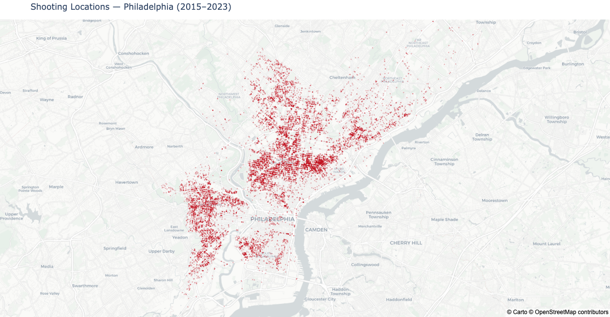
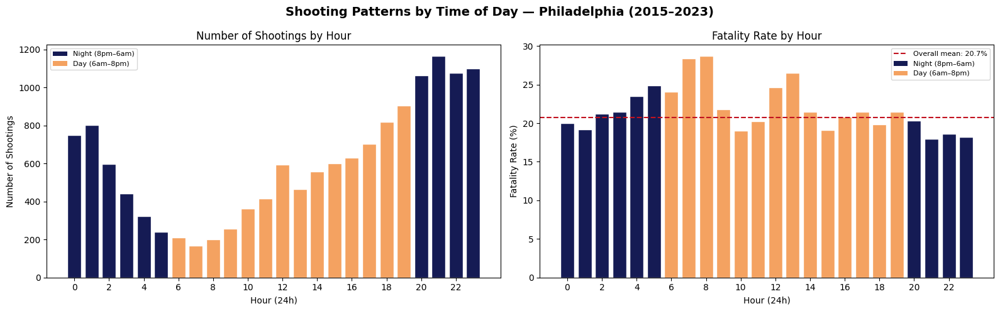
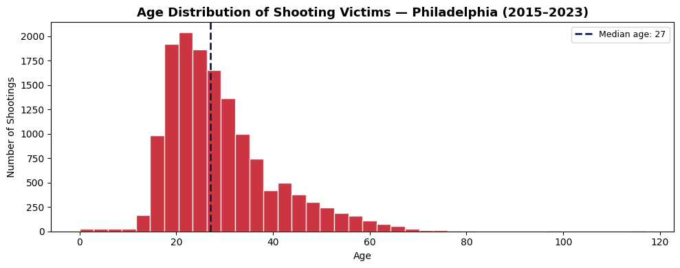
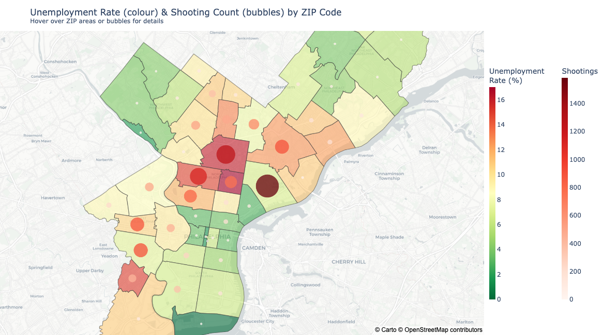
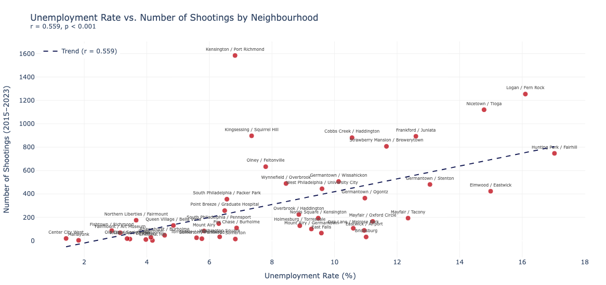
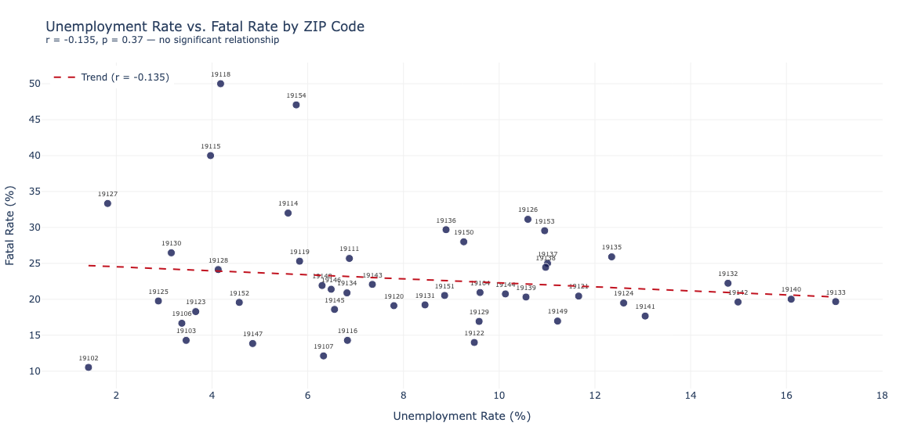
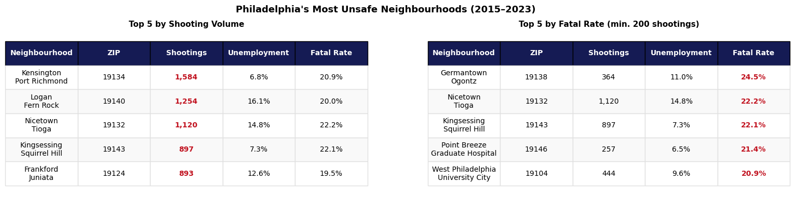

import pandas as pd
import geopandas as gpd
import matplotlib.pyplot as plt
import seaborn as sns
import plotly_express as px
import math
import plotly
import warnings
warnings.simplefilter('ignore')
import numpy as np
from scipy import stats
from zip_names import ZIP_TO_NEIGHBOURHOOD
shootings = pd.read_csv('data/openphilly_data_shootings.csv')
acs = pd.read_csv('data/acs2024_5yr_B23025_86000US19108.csv')
zip_boundaries = gpd.read_file('data/Zipcodes_Poly.geojson').to_crs('EPSG:4326')Philadelphia has one of the highest rates of gun violence of any major American city. Between 2015 and 2023, over 15,000 shooting incidents were recorded by the Philadelphia Police Department, roughly five people shot every single day for nearly a decade. But who gets shot, and where? And crucially, is there something about a neighbourhood itself that makes it more dangerous?
This analysis uses open data from two sources to explore that question. The shooting data comes from the Philadelphia Police Department, made publicly available through OpenDataPhilly, and covers 15,005 recorded shootings between 2015 and 2023. Each record includes a precise latitude and longitude, a timestamp, the age and sex of the victim, and a flag indicating whether the shooting was fatal. After dropping a small number of records with missing coordinates, we are left with a clean, mappable dataset covering nearly a decade of gun violence across the city.
The socioeconomic data comes from the US Census Bureau’s American Community Survey. This gives us raw labour force counts for every ZIP code in Pennsylvania, from which we derive a comparable unemployment rate for each area. Philadelphia’s ZIP codes range from around 1.5% unemployment in wealthier areas like Chestnut Hill to over 16% in parts of North and West Philadelphia, a striking degree of economic inequality within a single city.
Through these two datasets, we can ask a simple but important question: do the neighbourhoods where unemployment is highest also tend to be the neighbourhoods where people get shot?
1. Setup
# Compute unemployment rate from raw counts
acs['zipcode'] = acs['name'].astype(str).str.strip()
acs['labor_force'] = pd.to_numeric(acs['B23025003'], errors='coerce')
acs['unemployed'] = pd.to_numeric(acs['B23025005'], errors='coerce')
acs['unemployment_rate'] = (acs['unemployed'] / acs['labor_force'] * 100).round(2)
# Keep only Philadelphia ZIPs (191xx) with valid data
acs_philly = acs[acs['zipcode'].str.startswith('191')].dropna(subset=['unemployment_rate'])
acs_philly = acs_philly[acs_philly['labor_force'] > 100].copy()2. Where Do Shootings Happen?
The most immediate way to understand Philadelphia’s gun violence problem is to look at where it actually occurs.
# City-Wide Shooting Locations
shootings = shootings.dropna(subset=['lat', 'lng']).copy()
shootings['fatal_label'] = shootings['fatal'].map({1.0: 'Fatal', 0.0: 'Non-Fatal'})
shootings['hour'] = pd.to_datetime(shootings['time'], format='%H:%M:%S', errors='coerce').dt.hour
shootings['time_of_day'] = shootings['hour'].apply(
lambda h: 'Night (8pm–6am)' if pd.notna(h) and (h >= 20 or h < 6) else 'Day (6am–8pm)'
)
shootings_gdf = gpd.GeoDataFrame(
shootings,
geometry=gpd.points_from_xy(shootings['lng'], shootings['lat']),
crs='EPSG:4326'
)
# Spatial join to get ZIP code for each shooting
shootings_gdf = gpd.sjoin(
shootings_gdf,
zip_boundaries[['CODE', 'geometry']],
how='left',
predicate='within'
).rename(columns={'CODE': 'zipcode'})
shootings_gdf['zipcode'] = shootings_gdf['zipcode'].astype(str).str.strip()
shootings_gdf['neighbourhood'] = shootings_gdf['zipcode'].map(ZIP_TO_NEIGHBOURHOOD).fillna('Unknown')
fig = px.scatter_mapbox(
shootings_gdf,
lat='lat',
lon='lng',
color_discrete_sequence=['#c1121f'],
zoom=10.5,
center={'lat': 39.9916, 'lon': -75.1312},
opacity=0.3,
title='Shooting Locations — Philadelphia (2015–2023)',
hover_data={
'lat': False,
'lng': False,
'neighbourhood': True,
'location': True,
'year': True,
'fatal_label': True,
'time_of_day': True,
},
labels={
'fatal_label': 'Outcome',
'time_of_day': 'Time of day',
'neighbourhood': 'Neighbourhood'
}
)
fig.update_traces(marker=dict(size=3))
fig.update_layout(
mapbox_style='carto-positron',
margin=dict(l=0, r=0, t=40, b=0),
height=650,
showlegend=False
)
fig.show()
Each red dot represents a single shooting incident recorded between 2015 and 2023. The map is interactive; hover over any dot to see the address, neighbourhood, year, time of day, and whether the shooting was fatal.
The clustering is immediate and striking. Rather than being spread evenly across the city, gun violence concentrates heavily in two distinct areas: a dense band running through North Philadelphia, covering neighbourhoods like Logan, Nicetown, and Kensington, and a separate but equally concentrated cluster in West Philadelphia around Cobbs Creek and Kingsessing.
By contrast, large parts of the city are almost entirely clear. Northeast Philadelphia, the northwestern neighbourhoods of Chestnut Hill, Roxborough, and Manayunk, and the riverfront areas to the east record comparatively few incidents across the entire nine-year period. Center City, despite being the most densely populated part of the city during daytime hours, also shows relatively sparse shooting activity.
This spatial pattern raises an immediate question. If gun violence were driven purely by population density, we would expect it to be more evenly distributed across the city. The fact that it is not suggests that something specific to certain neighbourhoods, whether economic conditions, historical disinvestment, or other structural factors, is shaping where violence concentrates. That is the question this analysis sets out to explore.
3. Who Gets Shot, and When?
Before examining the role of neighbourhood economics, it is worth understanding the basic characteristics of the shootings themselves. Who are the victims? When do incidents occur? And are some types of shooting more likely to be fatal than others?
3.1 Shooting Patterns by Time of Day
fig, axes = plt.subplots(1, 2, figsize=(16, 5))
fig.suptitle("Shooting Patterns by Time of Day — Philadelphia (2015–2023)",
fontsize=14, fontweight='bold')
# Shootings by hour
hourly = shootings_gdf.groupby('hour').size()
colors = ['#151b54' if (h >= 20 or h < 6) else '#f4a261' for h in hourly.index]
bars = axes[0].bar(hourly.index, hourly.values, color=colors, edgecolor='white')
axes[0].set_title("Number of Shootings by Hour")
axes[0].set_xlabel("Hour (24h)")
axes[0].set_ylabel("Number of Shootings")
axes[0].set_xticks(range(0, 24, 2))
axes[0].bar(0, 0, color='#151b54', label='Night (8pm–6am)')
axes[0].bar(0, 0, color='#f4a261', label='Day (6am–8pm)')
axes[0].legend(fontsize=8)
# Fatality rate by hour
hourly_fatal = shootings_gdf.groupby('hour')['fatal'].mean() * 100
colors_fatal = ['#151b54' if (h >= 20 or h < 6) else '#f4a261' for h in hourly_fatal.index]
axes[1].bar(hourly_fatal.index, hourly_fatal.values, color=colors_fatal, edgecolor='white')
mean_fatal = shootings_gdf['fatal'].mean() * 100
axes[1].axhline(mean_fatal, color='#c1121f', lw=1.5, linestyle='--')
axes[1].set_title("Fatality Rate by Hour")
axes[1].set_xlabel("Hour (24h)")
axes[1].set_ylabel("Fatality Rate (%)")
axes[1].set_xticks(range(0, 24, 2))
axes[1].bar(0, 0, color='#151b54', label='Night (8pm–6am)')
axes[1].bar(0, 0, color='#f4a261', label='Day (6am–8pm)')
axes[1].plot([], [], color='#c1121f', lw=1.5, linestyle='--',
label=f'Overall mean: {mean_fatal:.1f}%')
axes[1].legend(fontsize=8)
plt.tight_layout()
plt.show()
Shootings peak sharply in the late evening hours, with the highest counts recorded between 9pm and midnight, before tapering off through the early morning. The quietest period runs from around 6am to midday, where incident counts drop to their lowest point of the day before gradually climbing again through the afternoon. The pattern is consistent with what one might expect from street-level conflict, concentrated in the hours when people are out socialising and when natural supervision of public spaces is lowest.
The fatality rate chart on the right tells a more nuanced story. The overall mean sits at 20.7%, shown by the red dashed line, and most hours lie relatively close to that figure. However, early morning hours between 4am and 8am show a noticeably higher fatality rate, regularly exceeding 25% and peaking close to 29%.
Two factors likely contribute to this. First, research has found that night-time injury is associated with worse outcomes in gun violence victims, consistent with the idea that early morning incidents tend to be more severe or targeted in nature. Second, delays in accessing trauma care are associated with increased mortality after severe gunshot wounds, and early morning hours are precisely when emergency staffing is likely to be under the most strain. Gunshot victims are more likely to die the further they are from a trauma center, a finding that compounds the time-of-day effect when both distance and response capacity are less favourable. Together these factors help explain why the hours between 4am and 8am, despite accounting for relatively few shootings in absolute terms, produce a disproportionately high share of fatalities.
Counterintuitively, the late night hours from 9pm to midnight, despite being when the most shootings occur in absolute terms, do not show an elevated fatality rate. The sheer volume of incidents at those hours appears to include a higher proportion of non-fatal shootings, perhaps reflecting more chaotic, less targeted violence in crowded settings where wounds are less likely to be immediately fatal. The takeaway is that when a shooting is most likely to happen and when it is most likely to kill are two different questions with different answers.
3.2 Age Distribution of Victims
fig, ax = plt.subplots(figsize=(10, 4))
ax.hist(shootings_gdf['age'].dropna(), bins=40,
color='#c1121f', edgecolor='white', alpha=0.85)
ax.set_title("Age Distribution of Shooting Victims — Philadelphia (2015–2023)",
fontsize=13, fontweight='bold')
ax.set_xlabel("Age")
ax.set_ylabel("Number of Shootings")
ax.axvline(shootings_gdf['age'].median(), color='#151b54',
lw=2, linestyle='--',
label=f'Median age: {shootings_gdf["age"].median():.0f}')
ax.legend(fontsize=9)
plt.tight_layout()
plt.show()
The age distribution tells a stark story. The overwhelming majority of shooting victims in Philadelphia are young adults, with the distribution peaking sharply in the early to mid twenties and falling off steeply thereafter. The median victim age is just 27, meaning half of all shooting victims across the nine-year period were younger than 27 at the time of the incident.
The rise begins around age 15, picks up rapidly through the late teens, and reaches its peak around ages 22 to 25 before declining. By the time victims reach their forties the numbers have dropped to a fraction of the peak, and shootings involving people over 60 are comparatively rare.
The long tail extending toward older ages is also worth noting. While the numbers are small, shootings do occur across the full age spectrum, and the presence of victims in their fifties, sixties, and beyond shows that gun violence does not exclusively target the young, even if they bear the heaviest burden.
4. Does Unemployment Predict Gun Violence?
This is the central question of the analysis. Philadelphia has 48 ZIP codes with meaningful population data; does the unemployment rate in a ZIP code tell us anything useful about how many shootings happen there?
4.1 Spatial Overlap between Unemployment and Shootings
Before running any correlations, the most immediate question is whether unemployment and gun violence even occupy the same parts of the city. The map below answers that question directly, overlaying both variables at once. ZIP codes are coloured by unemployment rate, running from green in lower unemployment areas through to deep red at the highest.
# Loading and computing unemployment
acs = pd.read_csv('data/acs2024_5yr_B23025_86000US19108.csv')
acs['zipcode'] = acs['name'].astype(str).str.strip()
acs['labor_force'] = pd.to_numeric(acs['B23025003'], errors='coerce')
acs['unemployed'] = pd.to_numeric(acs['B23025005'], errors='coerce')
acs['unemployment_rate'] = (acs['unemployed'] / acs['labor_force'] * 100).round(2)
acs_philly = acs[acs['zipcode'].str.startswith('191')].dropna(subset=['unemployment_rate'])
acs_philly = acs_philly[acs_philly['labor_force'] > 100].copy()
# Spatial join shootings to ZIP codes
shootings_with_zip = gpd.sjoin(
shootings_gdf[['fatal', 'time_of_day', 'geometry']],
zip_boundaries[['CODE', 'geometry']],
how='left', predicate='within'
).rename(columns={'CODE': 'zipcode'})
shootings_with_zip['zipcode'] = shootings_with_zip['zipcode'].astype(str).str.strip()
# Aggregate shootings by ZIP
shootings_by_zip = (shootings_with_zip
.dropna(subset=['zipcode'])
.groupby('zipcode')
.agg(n_shootings=('fatal', 'count'), fatal_rate=('fatal', 'mean'))
.reset_index()
)
# Merging
merged = pd.merge(
acs_philly[['zipcode', 'unemployment_rate', 'labor_force', 'unemployed']],
shootings_by_zip, on='zipcode', how='inner'
)
# Merge with boundaries for plotting
zip_plot = zip_boundaries.merge(merged, left_on='CODE', right_on='zipcode', how='left')
zip_plot['n_shootings'] = zip_plot['n_shootings'].fillna(0)
zip_plot['unemployment_rate'] = zip_plot['unemployment_rate'].fillna(0)
zip_plot['fatal_rate'] = zip_plot['fatal_rate'].fillna(0)
zip_plot['shootings_norm'] = (zip_plot['n_shootings'] / zip_plot['n_shootings'].max() * 40) + 5# Unemployment + Shooting Count on Single Map
zip_plot['neighbourhood'] = zip_plot['CODE'].astype(str).map(ZIP_TO_NEIGHBOURHOOD).fillna('Unknown')
fig = px.choropleth_mapbox(
zip_plot,
geojson=zip_plot.__geo_interface__,
locations=zip_plot.index,
color='unemployment_rate',
color_continuous_scale='RdYlGn_r',
range_color=[zip_plot['unemployment_rate'].min(), zip_plot['unemployment_rate'].max()],
mapbox_style='carto-positron',
zoom=10.5,
center={'lat': 39.9916, 'lon': -75.1312},
opacity=0.6,
custom_data=['CODE', 'neighbourhood', 'unemployment_rate', 'n_shootings', 'fatal_rate'],
labels={'unemployment_rate': 'Unemployment Rate (%)'},
title='Unemployment Rate (colour) & Shooting Count (bubbles) by ZIP Code<br>'
'<sup>Hover over ZIP areas or bubbles for details</sup>'
)
fig.update_traces(
hovertemplate=(
'<b>%{customdata[1]}</b> (ZIP %{customdata[0]})<br>'
'Unemployment: %{customdata[2]:.1f}%<br>'
'Shootings: %{customdata[3]}<br>'
'Fatal rate: %{customdata[4]:.1%}<br>'
'<extra></extra>'
)
)
zip_plot['centroid_lat'] = zip_plot.geometry.centroid.y
zip_plot['centroid_lng'] = zip_plot.geometry.centroid.x
zip_plot['shootings_norm'] = (zip_plot['n_shootings'] / zip_plot['n_shootings'].max() * 40) + 5
fig.add_scattermapbox(
lat=zip_plot['centroid_lat'],
lon=zip_plot['centroid_lng'],
mode='markers',
marker=dict(
size=zip_plot['shootings_norm'],
color=zip_plot['n_shootings'],
colorscale='Reds',
opacity=0.75,
showscale=True,
colorbar=dict(
title='Shootings',
x=1.15,
thickness=12,
y=0.5,
len=0.8
)
),
customdata=zip_plot[['CODE', 'neighbourhood', 'unemployment_rate', 'n_shootings', 'fatal_rate']].values,
hovertemplate=(
'<b>%{customdata[1]}</b> (ZIP %{customdata[0]})<br>'
'Unemployment: %{customdata[2]:.1f}%<br>'
'Shootings: %{customdata[3]}<br>'
'Fatal rate: %{customdata[4]:.1%}<br>'
'<extra></extra>'
),
name='Shooting Count'
)
fig.update_layout(
coloraxis_colorbar=dict(
title='Unemployment<br>Rate (%)',
thickness=12,
x=1.0,
y=0.5,
len=0.8
),
margin=dict(l=0, r=120, t=60, b=0),
height=650,
)
fig.show()
The map above layers two variables simultaneously across Philadelphia’s ZIP codes. The bubbles show total shooting count, with larger and darker bubbles indicating more incidents. Hover over any ZIP code or bubble to see the full breakdown. The background colour of each ZIP code represents its unemployment rate, where green indicates lower unemployment, moving through yellow and orange to deep red for the highest rates.
The pattern that emerges is striking. The cluster of dark red ZIP codes running through North and West Philadelphia, particularly around Logan / Fern Rock (19140), Nicetown / Tioga (19132), and Hunting Park / Fairhill (19133), coincides almost exactly with the largest and darkest shooting bubbles on the map. These are neighbourhoods where unemployment consistently exceeds 12 to 16%, and where shooting counts run into the hundreds or thousands over the nine-year period.
By contrast, the green ZIP codes ringing the city’s edges are largely suburban or wealthier neighbourhoods. These pair with small and faint bubbles, reflecting both lower unemployment and far fewer shooting incidents.
One notable exception is the large dark bubble sitting over West Philadelphia, which shows a high shooting count relative to its moderate unemployment rate. This suggests that other factors beyond unemployment alone are shaping violence in that particular area, a limitation worth keeping in mind when interpreting the results.
4.2 More Unemployment, More Shootings?
To test this properly, we aggregate shootings by ZIP code and plot them against the unemployment rate. If the relationship is real, we’d expect a clear upward trend. ZIP codes with higher unemployment should have more shootings.
# ── Section 4.2: Unemployment Rate vs. Shooting Count (Interactive) ───────────
merged['neighbourhood'] = merged['zipcode'].map(ZIP_TO_NEIGHBOURHOOD)
m, b = np.polyfit(merged['unemployment_rate'], merged['n_shootings'], 1)
x_line = np.linspace(merged['unemployment_rate'].min(), merged['unemployment_rate'].max(), 100)
r, p = stats.pearsonr(merged['unemployment_rate'], merged['n_shootings'])
fig = px.scatter(
merged,
x='unemployment_rate',
y='n_shootings',
text='neighbourhood',
custom_data=['zipcode', 'neighbourhood', 'unemployment_rate', 'n_shootings', 'fatal_rate'],
labels={
'unemployment_rate': 'Unemployment Rate (%)',
'n_shootings': 'Number of Shootings (2015–2023)'
},
title=f'Unemployment Rate vs. Number of Shootings by Neighbourhood<br>'
f'<sup>r = {r:.3f}, p < 0.001</sup>'
)
fig.update_traces(
marker=dict(size=10, color='#c1121f', opacity=0.8, line=dict(color='white', width=1)),
textposition='top center',
textfont=dict(size=8, color='#555'),
hovertemplate=(
'<b>%{customdata[1]}</b> (ZIP %{customdata[0]})<br>'
'Unemployment: %{customdata[2]:.1f}%<br>'
'Shootings: %{customdata[3]}<br>'
'Fatal rate: %{customdata[4]:.1%}<br>'
'<extra></extra>'
)
)
fig.add_scatter(
x=x_line,
y=m * x_line + b,
mode='lines',
line=dict(color='#151b54', width=2, dash='dash'),
name=f'Trend (r = {r:.3f})',
hoverinfo='skip'
)
fig.update_layout(
xaxis=dict(title='Unemployment Rate (%)', gridcolor='#f0f0f0'),
yaxis=dict(title='Number of Shootings (2015–2023)', gridcolor='#f0f0f0'),
plot_bgcolor='white',
paper_bgcolor='white',
height=550,
margin=dict(l=40, r=40, t=80, b=40),
showlegend=True,
legend=dict(yanchor='top', y=0.99, xanchor='left', x=0.01)
)
fig.show()
The data supports this clearly. The correlation between unemployment rate and shooting count is r = 0.559 (p < 0.001). The r value measures the strength of the linear relationship between two variables, ranging from -1 to +1. A value of +1 would mean that every increase in unemployment is matched by a perfectly proportional increase in shootings, while -1 would mean the opposite, that higher unemployment perfectly predicts fewer shootings. Zero means no relationship at all. A value of 0.559 represents a moderate to strong positive relationship that is highly statistically significant.
In plain terms, ZIP codes with higher unemployment consistently experience more shootings. Notable ZIP codes like Logan / Fern Rock (19140) and Nicetown / Tioga (19132) sit near the top of both axes, closely following the trend.
There are some interesting outliers worth discussing. Kensington / Port Richmond (19134) has substantially more shootings than its unemployment rate alone would predict. Kensington is home to one of the most notorious open-air drug markets in the United States, centred around the intersection of Kensington and Allegheny Avenues, locally known as “the corner”. The area is characterised by widespread open drug use, extreme homelessness, and discarded syringes, conditions that create an environment where violence is driven by factors well beyond unemployment statistics alone.
The city launched a Kensington Community Revival plan in 2024, and early results show some promise, with reported reductions of 45% in homicides and 17% in overall violent crime compared to 2023. Whether these gains are sustained remains to be seen, but Kensington stands as a clear example of how localised social crises can push shooting rates far above what neighbourhood economics would predict (The Philadelphia Citizen, Kensington’s Safety Plan Shows Early Promise, March 2025).
Meanwhile, Centre City ZIP codes like Rittenhouse / Fitler (19103) and Center City West (19102) tell the opposite story. Despite moderate unemployment, they record very few shootings, likely reflecting the effect of high foot traffic, dense policing, and CCTV coverage in the city’s commercial core. Together, these outliers imply that unemployment is one piece of a more complex situational landscape and doesn’t paint the whole picture.
4.3 Does Unemployment Make Shootings More Deadly?
Volume is one thing. But does living in a high-unemployment neighbourhood also make a shooting more likely to be fatal? If economic deprivation shapes not just how often shootings happen but how deadly they are when they do, we would expect to see the same upward trend here. The scatter plot aims to visualise this.
# ── Section 4.3: Unemployment Rate vs. Fatal Rate (Interactive) ───────────────
m2, b2 = np.polyfit(merged['unemployment_rate'], merged['fatal_rate'] * 100, 1)
x_line = np.linspace(merged['unemployment_rate'].min(), merged['unemployment_rate'].max(), 100)
r2, p2 = stats.pearsonr(merged['unemployment_rate'], merged['fatal_rate'])
fig = px.scatter(
merged,
x='unemployment_rate',
y=merged['fatal_rate'] * 100,
text='zipcode',
custom_data=['zipcode', 'unemployment_rate', 'n_shootings', 'fatal_rate'],
labels={
'unemployment_rate': 'Unemployment Rate (%)',
'y': 'Fatal Rate (%)'
},
title=f'Unemployment Rate vs. Fatal Rate by ZIP Code<br>'
f'<sup>r = {r2:.3f}, p = {p2:.2f} — no significant relationship</sup>'
)
fig.update_traces(
marker=dict(size=10, color='#151b54', opacity=0.8, line=dict(color='white', width=1)),
textposition='top center',
textfont=dict(size=8, color='#555'),
hovertemplate=(
'<b>ZIP %{customdata[0]}</b><br>'
'Unemployment: %{customdata[1]:.1f}%<br>'
'Shootings: %{customdata[2]}<br>'
'Fatal rate: %{customdata[3]:.1%}<br>'
'<extra></extra>'
)
)
# Regression line
fig.add_scatter(
x=x_line,
y=m2 * x_line + b2,
mode='lines',
line=dict(color='#c1121f', width=2, dash='dash'),
name=f'Trend (r = {r2:.3f})',
hoverinfo='skip'
)
fig.update_layout(
xaxis=dict(title='Unemployment Rate (%)', gridcolor='#f0f0f0'),
yaxis=dict(title='Fatal Rate (%)', gridcolor='#f0f0f0'),
plot_bgcolor='white',
paper_bgcolor='white',
height=550,
margin=dict(l=40, r=40, t=80, b=40),
showlegend=True,
legend=dict(yanchor='top', y=0.99, xanchor='left', x=0.01)
)
fig.show()
Each dot above represents a ZIP code, plotted by its unemployment rate on the horizontal axis and its fatal shooting rate on the vertical axis. If unemployment drove lethality, we would expect the dots to rise from left to right. Instead, the trend line is actually slightly downward facing, and the dots scatter widely above and below it at every unemployment level.
Here the relationship essentially disappears. The correlation between unemployment rate and fatal shooting rate is r = -0.135 (p = 0.37), which is not statistically significant and shows barely any trend. The scatter is striking in its randomness, with ZIP codes at 2% unemployment and ZIP codes at 16% unemployment showing broadly similar fatal rates, clustering around the 20 to 25% range regardless of economic conditions.
It is worth treating the outliers with caution. Chestnut Hill (19118) appears to have a fatal rate of 50%, which sounds alarming, but this figure is based on just 2 recorded shootings, one of which was fatal. Similarly, Somerton / Parkwood (19154) records a fatal rate of 45.1% from only 17 incidents. When the underlying counts are this small, a single additional fatal or non-fatal shooting would swing the percentage dramatically. These are statistical artefacts of low sample sizes rather than meaningful signals, and should not be over-interpreted.
The ZIP codes with high shooting counts, where the fatal rate estimates are most reliable, cluster tightly around the 20 to 25% range regardless of unemployment level. This reinforces the core finding: whether a shooting victim survives appears to have little to do with the economic character of the neighbourhood where it happened. Fatality is more likely driven by immediate circumstances such as the nature of the weapon used, the distance to the nearest trauma centre, or the specific dynamics of the incident itself.
This is an important distinction to carry forward. Unemployment helps explain where shootings concentrate across the city, but it tells us very little about how deadly they are when they occur. The two questions require different analytical lenses entirely.
5. What Does This Tell Us?
Two clear findings emerge from this analysis:
Unemployment predicts shooting volume. ZIP codes with higher unemployment rates have significantly more shootings (r = 0.559, p < 0.001). This is consistent with a large body of criminological research linking economic deprivation to violent crime. When people lack stable employment and economic opportunity, the conditions for violence are more likely to take hold.
Unemployment does not predict shooting severity. The fatal rate of shootings is essentially unrelated to a ZIP code’s unemployment rate (r = -0.135, p = 0.37). Whatever determines whether a victim survives appears to operate at the individual incident level, not the neighbourhood level.
So which neighbourhoods bear the heaviest burden? The tables below rank Philadelphia’s ZIP codes in two ways: by the sheer volume of shootings recorded over the nine-year period, and by fatal rate among areas with at least 200 incidents. Together they paint a picture of where gun violence is most frequent and where it is most deadly. As the analysis above shows, these are not always the same neighbourhoods.
# ── Section 5: Top 5 Most Unsafe Neighbourhoods ──────────────────────────────
import matplotlib.gridspec as gridspec
merged['neighbourhood'] = merged['zipcode'].map(ZIP_TO_NEIGHBOURHOOD)
# Top 5 by total shootings
top5_volume = (merged
.nlargest(5, 'n_shootings')
[['zipcode', 'neighbourhood', 'n_shootings', 'unemployment_rate', 'fatal_rate']]
.reset_index(drop=True)
)
# Top 5 by fatal rate (min 200 shootings)
top5_fatal = (merged[merged['n_shootings'] >= 200]
.nlargest(5, 'fatal_rate')
[['zipcode', 'neighbourhood', 'n_shootings', 'unemployment_rate', 'fatal_rate']]
.reset_index(drop=True)
)
def format_table(df):
return pd.DataFrame({
'Neighbourhood': df['neighbourhood'].apply(lambda x: x.replace(' / ', '\n')),
'ZIP': df['zipcode'],
'Shootings': df['n_shootings'].apply(lambda x: f'{x:,}'),
'Unemployment': df['unemployment_rate'].apply(lambda x: f'{x:.1f}%'),
'Fatal Rate': df['fatal_rate'].apply(lambda x: f'{x*100:.1f}%'),
})
vol_display = format_table(top5_volume)
fatal_display = format_table(top5_fatal)
fig = plt.figure(figsize=(18, 4))
gs = gridspec.GridSpec(1, 2, figure=fig, wspace=0.4)
ax1 = fig.add_subplot(gs[0, 0])
ax2 = fig.add_subplot(gs[0, 1])
def draw_table(ax, df, title, highlight_col):
ax.axis('off')
table = ax.table(
cellText=df.values,
colLabels=df.columns,
cellLoc='center',
loc='center'
)
table.auto_set_font_size(False)
table.set_fontsize(10)
table.scale(1.2, 2.8)
for col in range(len(df.columns)):
table[0, col].set_facecolor('#151b54')
table[0, col].set_text_props(color='white', fontweight='bold')
col_idx = list(df.columns).index(highlight_col)
for row in range(1, len(df) + 1):
for col in range(len(df.columns)):
table[row, col].set_facecolor('#f9f9f9' if row % 2 == 0 else 'white')
table[row, col].set_edgecolor('#e0e0e0')
if col == col_idx:
table[row, col].set_text_props(fontweight='bold', color='#c1121f')
ax.set_title(title, fontsize=11, fontweight='bold', pad=10)
draw_table(ax1, vol_display, 'Top 5 by Shooting Volume', 'Shootings')
draw_table(ax2, fatal_display, 'Top 5 by Fatal Rate (min. 200 shootings)', 'Fatal Rate')
plt.suptitle("Philadelphia's Most Unsafe Neighbourhoods (2015–2023)",
fontsize=13, fontweight='bold', y=1.02)
plt.show()
The left table confirms what the spatial analysis suggested. Kensington / Port Richmond leads by a significant margin, recording nearly 330 more shootings than second-placed Logan / Fern Rock over the nine-year period. Three of the top five neighbourhoods carry unemployment rates above 12%, consistent with the broader correlation found earlier. The exception is Kensington / Port Richmond, where unemployment sits well below that threshold, reinforcing the earlier point that its shooting burden is driven by the drug market crisis rather than economic deprivation alone.
The right table shows that when ranked by fatal rate, a largely different set of neighbourhoods emerges. Germantown / Ogontz tops the list despite having a moderate overall shooting volume, and several other high-fatality neighbourhoods have relatively low unemployment rates. This further supports the finding that how deadly a shooting is has little to do with the economic character of the area where it happens.
Despite enormous differences in shooting volume between neighbourhoods, the share of incidents that prove fatal remains remarkably consistent, clustering in a tight band regardless of unemployment level or overall violence burden.
6. Limitations
It is important to note that this analysis does have some limitations.
The most important is that correlation is not causation. Finding that unemployment and shootings co-occur in the same ZIP codes does not tell us that unemployment causes gun violence. Both could be driven by a third factor, such as decades of disinvestment in particular neighbourhoods, racial segregation, or the historical concentration of public housing.
There is also a temporal mismatch. The ACS unemployment figures are from 2024, while the shooting data runs from 2015 to 2023. Unemployment patterns tend to be relatively stable over time, but this gap is worth acknowledging.
ZIP codes are coarse geographic units. A lot of variation happens within a single ZIP code, and averaging over large areas inevitably smooths out important local differences. A block-level or census tract analysis would likely reveal sharper patterns.
Finally, population density confounding is a real concern. Denser areas naturally have more unemployed residents and more opportunities for violent conflict simply by virtue of having more people. Normalising both variables by population would be a logical next step for a more rigorous analysis.
7. Conclusion
Philadelphia’s gun violence problem is not random. It is spatially concentrated, temporally patterned, and meaningfully correlated with economic deprivation at the neighbourhood level. ZIP codes where unemployment is highest are consistently the same ZIP codes where the most shootings occur, and the spatial overlap between the two is visible at a glance.
The analysis also reveals what unemployment cannot explain. Fatal rates remain stubbornly consistent across neighbourhoods regardless of their economic conditions, suggesting that whether a victim survives depends on more immediate factors: the nature of the incident, the weapon involved, and how quickly advanced trauma care can be reached. These are questions that require different data and a different analytical lens.
Kensington serves as an important reminder that unemployment is not the only driver. Localised crises, whether a drug market, a history of disinvestment, or the breakdown of community institutions, can push violence far beyond what economics alone would predict. The neighbourhood sits at the intersection of multiple compounding factors, none of which unemployment statistics fully capture.
What this analysis does establish is a clear and statistically significant relationship between economic deprivation and shooting volume at the ZIP code level. That finding alone carries a policy implication worth taking seriously: efforts to reduce gun violence in Philadelphia’s most affected neighbourhoods may need to go hand in hand with investment in the economic conditions that make those neighbourhoods so much more vulnerable in the first place.